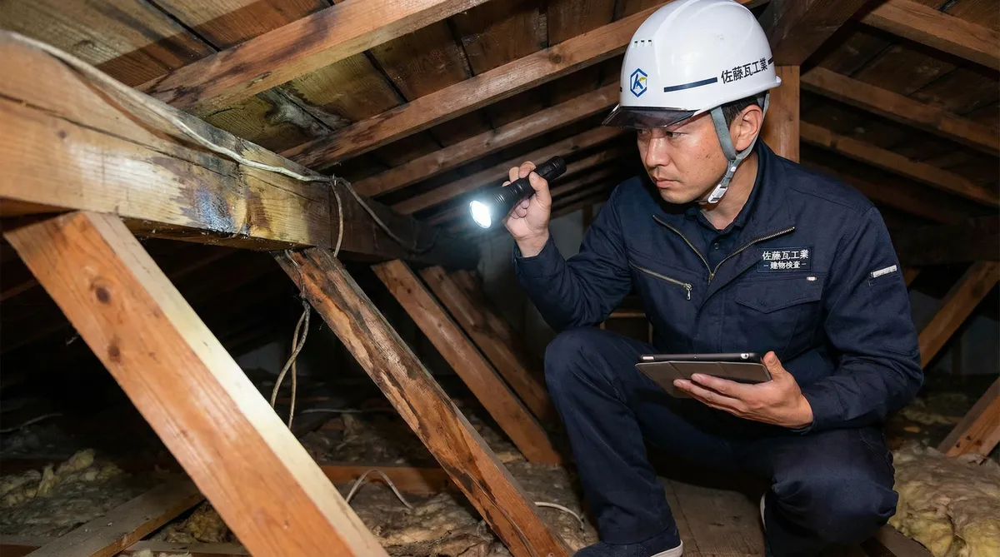
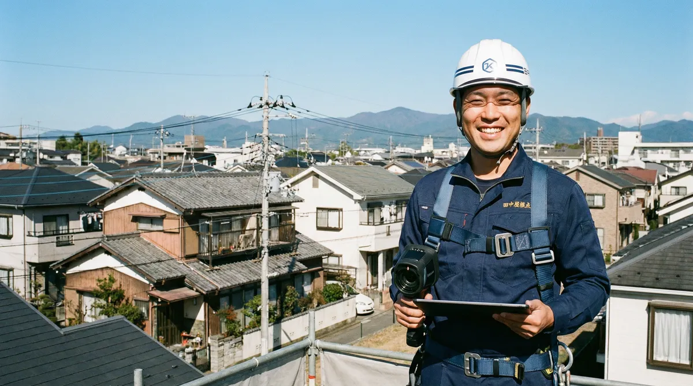

雨漏りの応急処置に防水テープは使える？正しい貼り方とNG例

「雨漏りに気づいたけど、今すぐ業者に来てもらえない」「とりあえず自分で塞げないか」——そんなとき、ホームセンターで手に入る防水テープ（雨漏り用補修テープ）が応急処置の選択肢になることがあります。
この記事では、防水テープが向いている場所・向いていない場所、正しい貼り方の手順、やってはいけないNG例を解説します。あくまで一時的な処置であり、原因を特定して直すには専門業者の調査が必要という点も合わせて押さえておきましょう。
防水テープが向いている場所・向いていない場所
防水テープが効果を発揮しやすいのは、水の侵入口がはっきり見えている場所です。
- 窓サッシの隙間から水がにじんでいる
- 外壁のひび割れ（クラック）から染み出している
- ベランダの笠木や金属部材の継ぎ目・釘穴周り
反対に、天井や壁の内側にシミが出ているだけの場合は、テープを貼る対象が見当たりません。水は侵入口から離れた場所に伝って染み出すことが多く、「濡れている場所の真上」に原因があるとは限らないためです。この場合は室内側の応急処置（バケツ・養生）に切り替え、原因調査を業者に依頼しましょう。
防水テープの選び方
① 屋外・紫外線対応の製品を選ぶ
室内用の補修テープでは、屋外の紫外線や温度変化に耐えられず、すぐに剥れてしまうことがあります。パッケージに「屋外用」「耐候性」と明記された防水テープを選びましょう。
② 下地の素材との相性を確認する
金属屋根の継ぎ目や釘周りには金属用の止水テープ、ゴムシートやウレタン防水などの陸屋根には素材に合わせた防水テープが必要です。屋根材・下地の素材に対応した製品かどうかをパッケージで確認してください。
③ 切り貼りできる柔軟性があるものを選ぶ
隙間の形は複雑なことが多いため、ハサミで切って重ね貼りできる柔らかいタイプが扱いやすいです。
正しい貼り方の手順
貼り方を間違えると、テープの下に水が入り込んでむしろ被害が広がることがあります。以下の手順で進めましょう。
- ①乾いた布で貼る部分の水気・ホコリ・汚れを拭き取る（濡れたままだと接着しません）
- ②雨水が流れてくる方向を確認し、水の流れに逆らうように下から上へ重ねて貼る（接着面に水が入りにくくなります）
- ③貼った後はヘラやローラーで空気を抜き、しっかり密着させる

サッシの隙間であれば下側から、屋根の継ぎ目であれば軒先側（下流側）から貼り始めるのが基本です。重ね貼りする場合は、先に貼ったテープの上から後のテープが重なるようにします。
テープ処置でやってはいけないNG例
NG① 自分で屋根に登って作業する
繰り返しになりますが、これが最も危険です。屋根の上の作業は必ずプロに依頼してください。
NG② 原因を特定せずに手当たり次第貼る
「怪しいところ全部にテープを貼っておけば安心」と思いがちですが、水の出口を塞ぐと、行き場を失った水が別のルートから建物内部に回り、被害が広がったり原因特定が難しくなったりすることがあります。侵入口がはっきりしている場所に絞って処置しましょう。
NG③ コーキング剤で代用する
手元にテープがないからとコーキング剤で広範囲を塞ぐのもおすすめしません。防水テープと同様、水の逃げ道を塞いでしまい、プロの調査前に自己流で手を加えると原因箇所の特定がより難しくなります。
NG④ テープで止まったからと修理を先延ばしにする
テープで水が止まっても、雨の降り方や風向きによって再び漏れることがあります。見えない壁内部や屋根下地では、浸水による腐食やカビが進行している可能性があるため、応急処置で済ませず原因調査を受けましょう。
防水テープはあくまで「時間稼ぎ」。必ず原因調査を

防水テープはあくまで次の雨までの時間を稼ぐための応急処置です。雨漏りの原因が自然に直ることはありません。水の侵入口は屋根・外壁・ベランダ・サッシ周りなど無数にあり、1軒1軒建物の構造が違うため、ネットの情報だけで原因を断定することはできません。
調査・見積もり無料の専門業者に建物を見てもらうのが、結局いちばん早くて確実です。
よくある質問
防水テープはどこで買えますか？
ホームセンターやオンラインショップで購入できます。「屋外用」「防水」「耐候性」と明記された製品を選び、使用する場所（金属屋根用・ゴムシート用など）に対応しているか確認してください。
雨の最中にテープを貼っても大丈夫ですか？
貼る面が濡れていると接着しないため、できるだけ雨が弱まったタイミングで、貼る部分の水気を拭き取ってから作業してください。屋根の上での作業は雨天時に限らず危険なため行わないでください。
テープを貼ったら保険の申請に不利になりませんか？
応急処置をしたこと自体が不利になるわけではありませんが、保険適用の判断は保険会社が行います。テープを貼る前に被害箇所の写真を撮っておくと、申請時の記録として役立ちます。
テープを貼ってから何日くらい様子を見ていいですか？
様子見を長く続けることはおすすめしません。テープはあくまで一時的な処置なので、次の雨が降る前に、調査・見積もり無料の業者に原因を確認してもらうのが安心です。